The Hall of Reflections
You step through a mirror and it breaks behind you. The things in here took your powers on the way in, and they're far beyond you. They don't want to hurt you. They want to scare you. Find five fragments of the way out, put the mirror back together, and walk out before your heart gives up.
- The goal
- Keys
- Mirror or glass
- Them
- Their ways
- Their moods
- Every look
- Dread and stress
- Your tools
- Getting out
- Tips
- The numbers
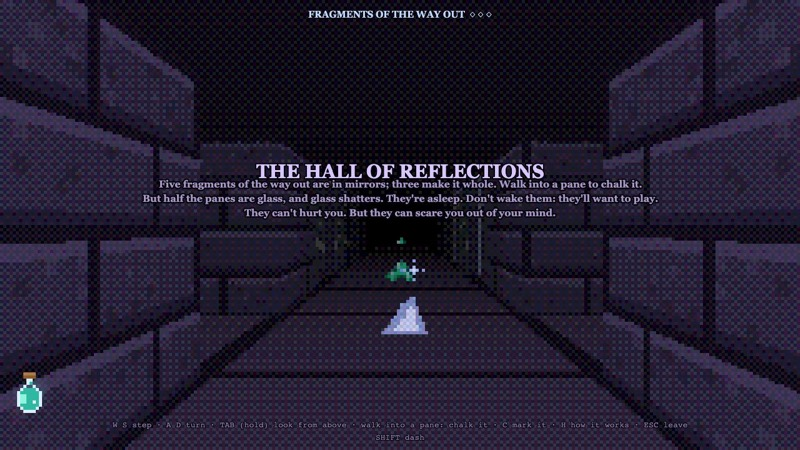
You'll find the Hall on the Training Ground's TRIAL page. You see everything through your slime's eyes, one tile and one quarter turn at a time. The first time you go in, its own short guide opens by itself; H brings it back whenever you want, and the hall holds still while you read.
The goal
The hall is two rings of corridors around a gallery, a glass room in the middle with four panes standing free in it. Small closets open off the sides. Every one of its 38 panes is either a mirror or glass, picked at random each run, and every pane is a window: you can see through it from both sides.
Seven of the mirrors hold a fragment of the way out. One or two are in the gallery, one is in each quarter of the hall outside it, and the rest are anywhere. None is within 5 steps of where you start, and no two are within 4 steps of each other, so you'll cover the whole hall. Walk into a pane to chalk it. A mirror rings, gets an eye drawn on it, and gives up its fragment if it has one. Glass shatters, loudly, and gets a cross.
Five fragments make the way out whole. Taking the fifth wakes every one of them, all hunting, for the run home: take them back to the broken mirror you came through and walk into it. The other two fragments aren't needed, but each one is worth 25 glorps if you're brave enough to go back for it.
So the whole trial is one question, asked over and over: is this pane a mirror? Guess wrong and the glass breaks, and they all hear it.
Keys
| W S | Step forward, step back. Stepping back lets you keep your eyes on something while you leave. The arrow keys work too. |
| A D | Turn a quarter left or right. |
| Space hold | Raise the shard to your eyes and see behind you. Your arm tires. |
| F hold | Wipe the fog off your shard. |
| C | Mark the pane in front of you (or, with the shard up, the one behind you): glass, then mirror, then rubbed out. It's only your guess. |
| Walk into a pane | Chalk it: the real test. Mirror or glass, for good. |
| Tab hold | Look from above: step out of your own eyes for a view from up behind you. |
| Shift | Dash. Drinks a vial of goo. |
| Q | Set down a decoy slime (once you've found one). |
| E | Set down a sentry slime, or pick one back up before it goes off (once you've found one). |
| H | The Hall's own short guide. |
| Esc | Leave the hall. |
| R or Enter | Go again, after you're scared to death (R) or after you get out (Enter). |
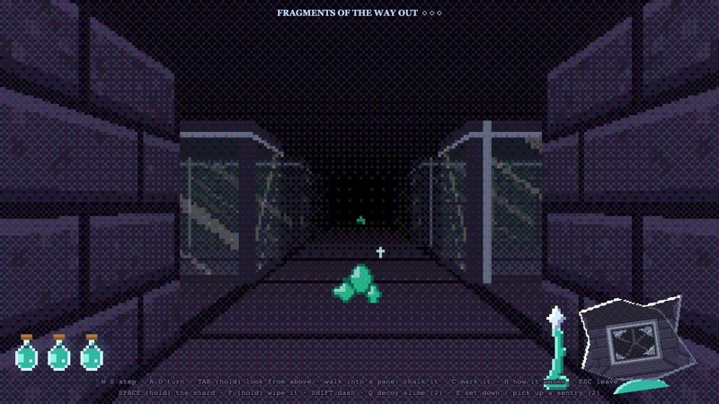
Mirror or glass
You can't tell by looking. The mirrors here are strange: looked at straight on, a mirror shows nothing. It looks exactly like glass, and you can see through both.
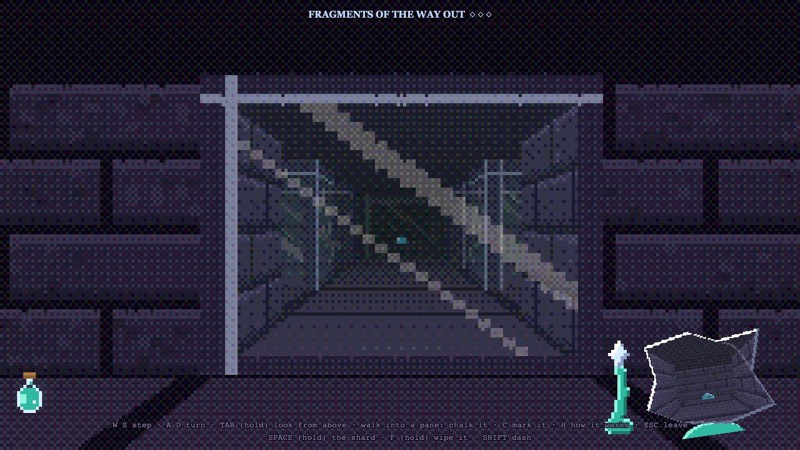
A mirror here only shows a reflection of a reflection, and your shard is a reflection. So turn your back on a pane, raise the shard to your eyes, and look into it. A mirror shows you in it, holding the shard up, a beat behind your moves. Glass shows whatever's beyond it.
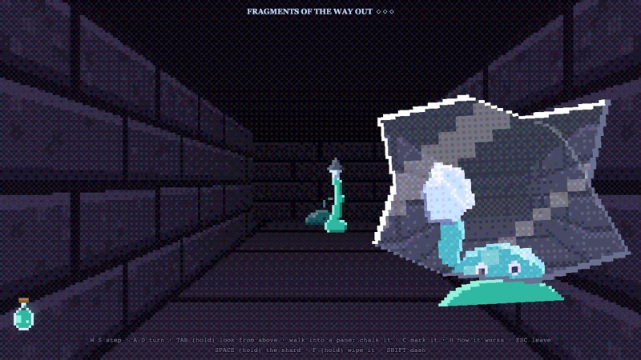
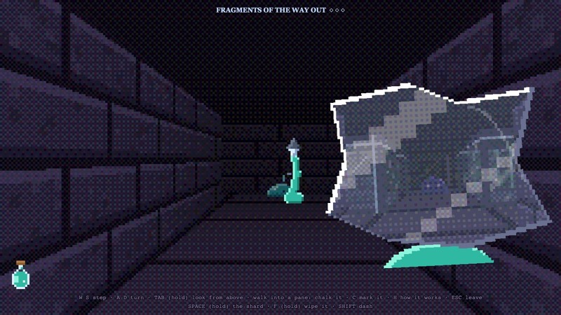
The shard has to be raised. Down in your hand, it shows what's behind you but never a reflection of you, so it's no help for testing.
Your decoys and sentries test panes too
The slimes you set down are made of reflection, so a mirror shows them even straight on. Set one down near a pane and look at the pane from where you can see both: if your little pink decoy or teal sentry shows up in it, it's a mirror. Straight down a narrow corridor a slime hides its own reflection, so this works best in the gallery and at corners.
Chalk and marks
Chalk is the real test: walk into the pane. A mirror gets an eye, glass a cross (and it's broken now). A pane you've already chalked does nothing the second time.
Marks (C) are only notes for yourself: a faint cross or eye for what you think a pane is, so you don't test it twice. Each press goes glass, then mirror, then rubbed out. With the shard up, C marks the pane right behind you, the one you just looked at.
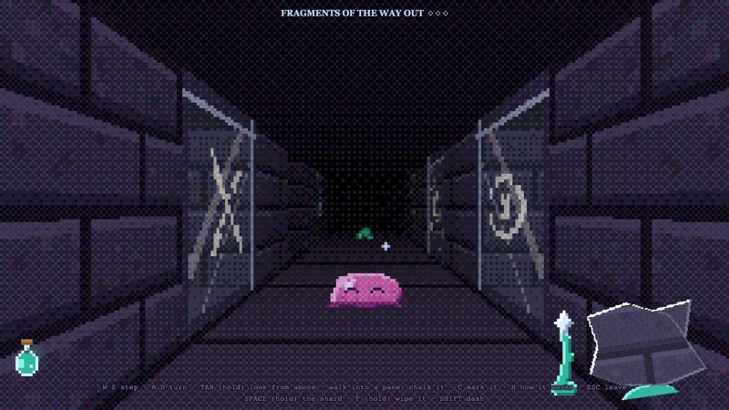
Breaking glass is loud. Every sleeper within 7 tiles wakes. Every one already awake lunges two steps at you, whether you're watching it or not, and gets a whole mood worse (half a mood more within 7 tiles).
Them
There are four. They start asleep, looking a lot like you, eyes shut. One wakes if you come within 2 tiles of it, or at a noise near it: a dash (6 tiles), a chalked pane (4 tiles), breaking glass (7 tiles). Every fragment you take also wakes the nearest one still asleep. Waking takes a moment (an extra second and a half before its first step), and you'll hear it: a giggle, from where it is.
They only move while nothing is looking at them. Your eyes, your raised shard and your decoys all count. Look away, even to turn a corner, and they come toward you, the shortest way, round each other.
Every two or three steps one takes, it's in a new look, and at once when its mood turns, so you see it turn. However near it is, the look shows its mood: calm, playful or hunting, so you can always tell how riled it is. Right behind a pane between you, it's usually up against the glass instead. Right next to you, one you're not watching doesn't get you yet: it reaches, caught in time almost on you, with a sharp breath and a shrill sound you can't miss. That's your chance to turn and catch it. Look away again and it has you.
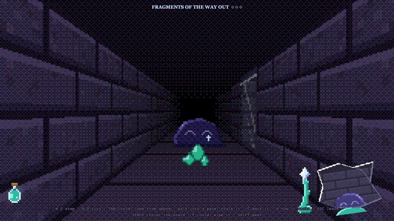
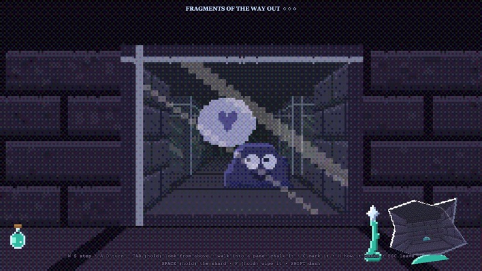
You hear them move too: a soft wet slide, from the left or right, louder the nearer it is, and dull through stone. You can hear one up to about 10 tiles off.
If one reaches you, it pranks you, then goes back to sleep somewhere at least 8 tiles away. It sleeps it off for 15 to 25 seconds, then it's up again by itself.
Four ways of hunting
Each of the four hunts its own way, and each is its own sort, with looks only it wears, so you can tell which one you're looking at. Far off, each heads for its own spot. Within 3 steps of you, any of them comes straight at you.
Any of them can hold a corridor's walls or splat on the wall behind it.
When one pranks you, the rest are startled: any other within 3 steps of you scampers back to 4 to 7 steps off, out of your sight if it can, and forgets any reach it had going. One prank never runs straight into the next.
Their moods
Every one wakes calm, and the longer it's awake, the worse it gets.
What riles them
- Staring. While you look straight at one, it gets worse half again as fast (calm to playful in 50 seconds, playful to hunting in 50 more).
- A noise near it. A dash or a chalked pane nearby makes it half a mood worse.
- Breaking glass. Every one awake gets a whole mood worse, wherever it is, and half a mood more if it's within 7 tiles.
- Fragments. Each of your first four riles every one awake a little (a quarter of a mood). Once you have five, they're all hunting, and stay that way.
What calms them
A hunter that hasn't seen you for 20 seconds loses interest and cools to playful (not once you have five). Lose it round a few corners and the hall settles down.
A shoo or a prank calms one right down: either sends it back to sleep far away, and it wakes calm again (hunting, once you have five).
Hearing them turn
You hear it when one gets worse: a giggle when it turns playful, and a low, quick giggle when it starts hunting, with a note on screen. Both come from where it is, so you can tell which way to be careful.
When one can see you
One with a clear line to you (through floor and panes, not stone) comes about a fifth quicker. One that's lost you round a corner slows down by a quarter. Every fragment you take makes them all a little quicker too.
Every look
Every two or three steps (or when its mood turns), one picks a new look from its own ones for its mood (see the four of them), never the one it just had. Here's every one of them.
Asleep
Where they start, and where a shooed or pranked one goes back to.Calm
Just woken, slow, busy with itself.Playful
Toying with you. After 30 seconds awake, or once you have a fragment.Hunting
Quick and wrong. After 45 seconds more, or once you have five.Behind glass
Any mood, right behind a pane between you (most of the time).Reaching for you
Any mood, right next to you: caught in time, the step before it gets you. Look away again and it does.Caught next to you
Catch one right next to you, reaching or not, and it pretends it wasn't up to anything, each its own way. Then it has to start over.A secret (spoiler)
Very rarely, when one steps somewhere far off, it isn't wearing a look at all, and you see what they really are. It only ever shows straight on, never in a reflection, and it's gone by its next step. Catch it and you earn Beyond Comprehension, worth 500 glorps.
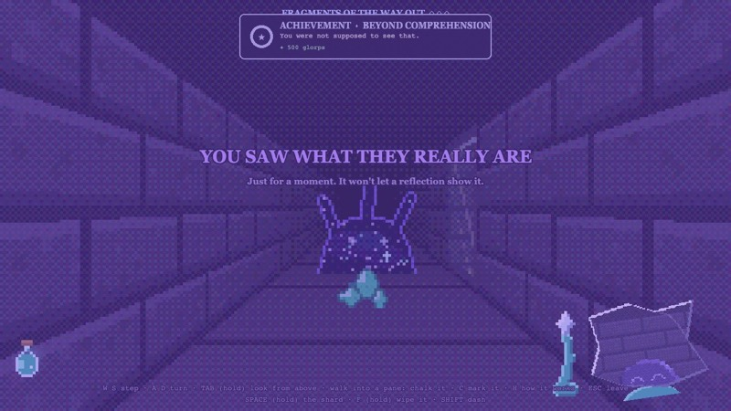
Dread and stress
They can't hurt you. Your own fear can.
Dread: don't meet their eyes
Looking straight at one that's awake fills you with dread, faster the more of the screen it fills. The edges darken, the colour drains, cracks creep in, your heart pounds. Looking at one in your raised shard doesn't count: it's a reflection. Dread starts draining half a second after you look away.
The first time you see one that's just come up close (two steps away or nearer), it makes you jump. If you saw it straight on, that's a burst of dread on top.
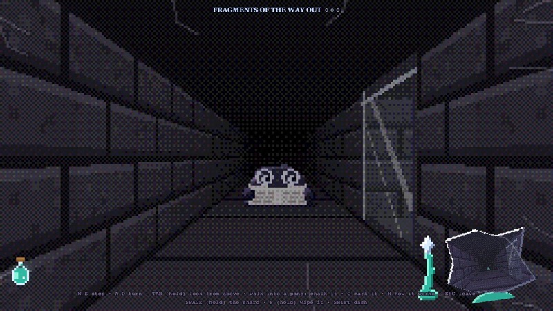
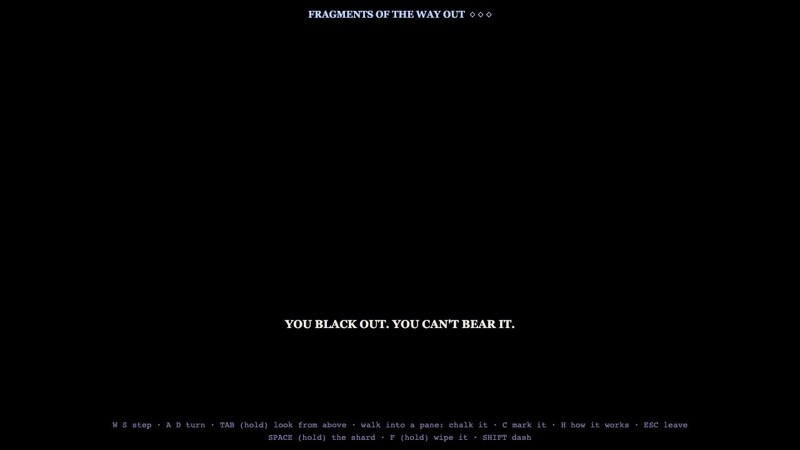
When dread is full, you black out for a second. Only your decoys still watch them while you're out, so the rest move. You come round about half full of dread.
Stress: what their pranks leave you with
A prank is a huge scare, then a giggle. It stays with you as stress, for good. Your dread counts toward stress too, while it lasts. When stress is full, you're scared to death and the run is over.
They have four pranks, and never pull the same one on you twice in a row:
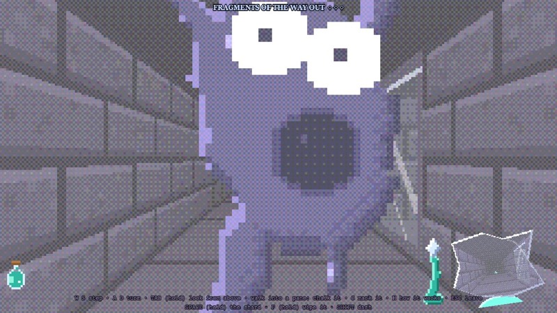
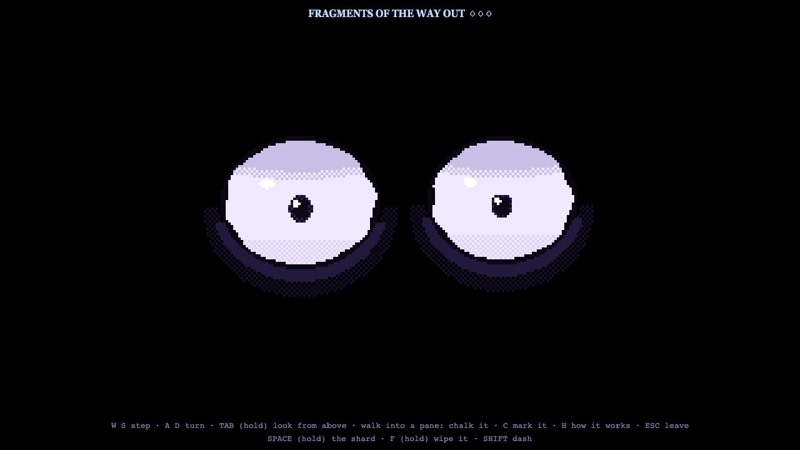
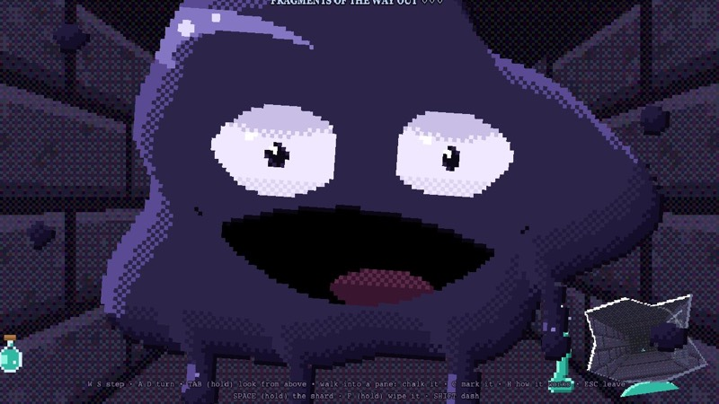
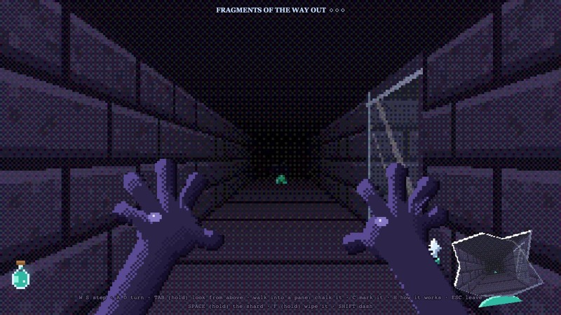
While it's at it, and for a moment after, none of them moves. Then they're back to it.
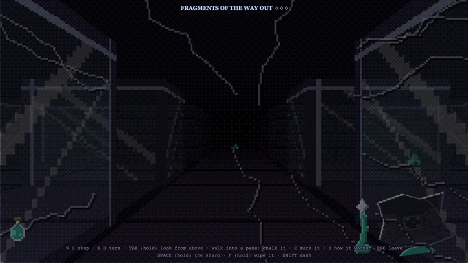
The more they've got you, the worse it feels: your heart beats all the time, the view shakes (badly, near the end), and the dark pulses in at the edges like you're about to faint.
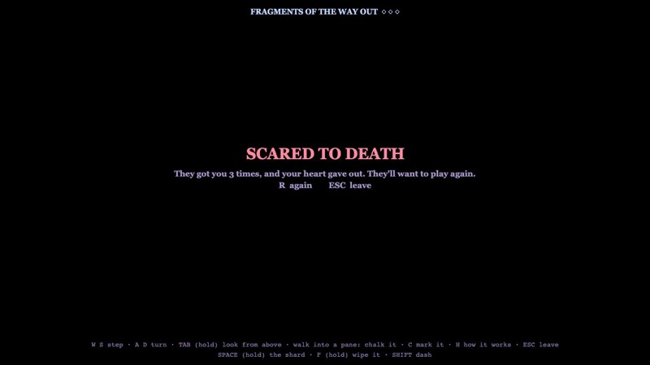
Your tools
You start with your goo and one vial of it. The shard is on the floor two steps ahead of you. Everything else is lying about the hall, and the game tells you what each thing does when you pick it up.
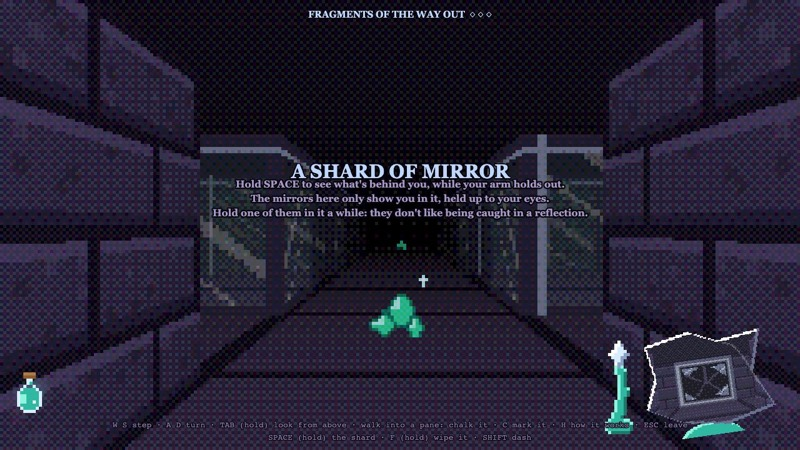
The shard
Hold Space to raise it beside your face and see behind you. Anything you see in it is held, just like with your eyes, but it's a reflection, so it never builds dread. While it's up, the part of the view ahead that it covers isn't watched.
Your arm tires. The shard shakes and sinks, and after 4 seconds your arm gives out and drops it. Down, your arm rests (6 seconds from empty), and you can't raise the shard again until it's back to about a third. The goo arm beside the shard shows how much you have left.
It fogs up. Down in your hand, the shard stays clear for 15 to 30 seconds, then fogs a smudge at a time. Raised, you see through the fog better. The foggier it is, the shorter its reach: fully fogged, it only holds the ones within about 3 tiles behind you. Hold F to wipe it clean (a second and a half), but your arm can't rest while you do.
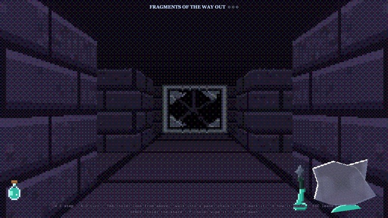
Shoo them. They don't like being caught in a reflection. Keep one in your raised shard for 2 seconds, whatever its mood, and it comes apart and slinks off, back to sleep far away. It's your only way to get rid of one, and it costs your arm.
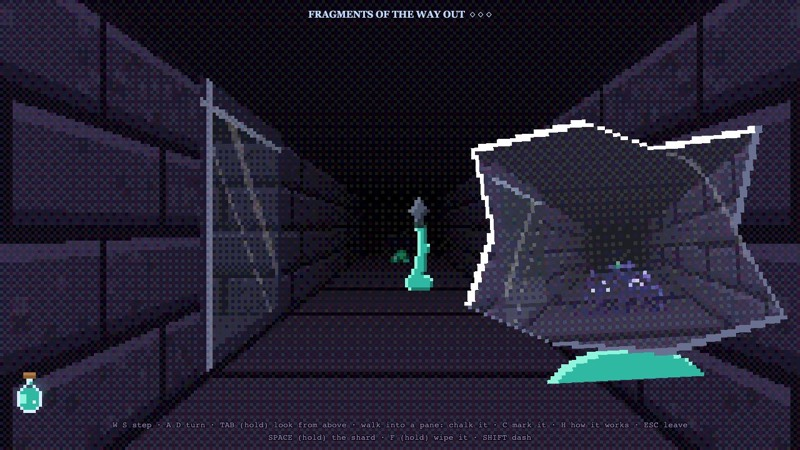
Goo and the dash
Shift drinks a vial and dashes you up to 3 tiles forward in a flash, past one of them if it's in the way (never through stone or glass). It's loud: sleepers within 6 tiles wake. You come in with one vial. There are two flasks of goo in the hall, and each one you find lets you carry one more, up to three. Empty vials refill one at a time, one every 9 seconds.
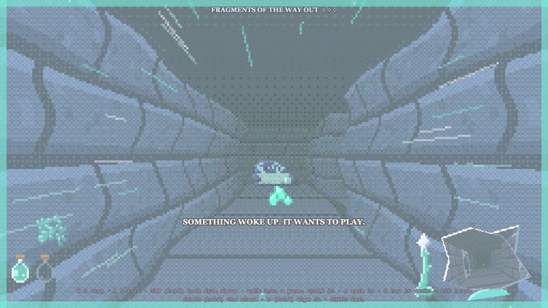
Decoy slimes
Q sets one down where you stand, staring the way you face, for 7 seconds. They take it for you: anything in its line (up to 8 tiles, through glass, up to the first stone) is held, so you can turn your back and go. Its stare lights the floor pink. There are two in the hall, each good for one use.
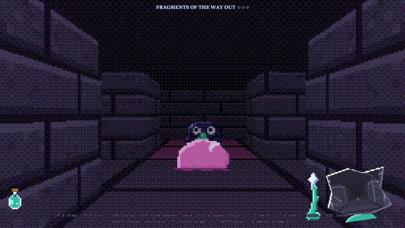
Sentry slimes
E sets one down. It goes off when one of them moves within its reach (about three and a half tiles round it, even through one wall or pane into the next corridor), or when one asleep in its reach wakes up. One just sleeping there won't set it off, so plant one by a sleeper as an alarm.
When it goes off it pings twice, 3 seconds apart. Each ping shows you every one of them in its reach for a second, as teal ghosts through the walls (and in the view from above). Then it's spent. Before it goes off, stand on it and press E to pick it back up. There are two.
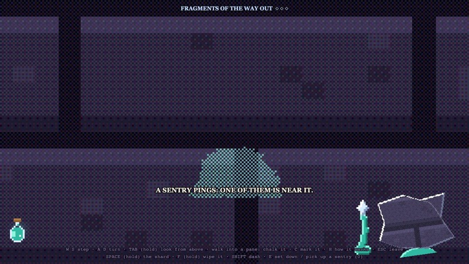
Looking from above
Hold Tab to rise out of your own eyes: the view pulls back and up behind you, turned a little toward the middle of the hall. You see yourself, the stone and panes round you (with your chalk and marks), what's lying about, and your slimes, with the dark closing in a few tiles off. You never see them this way, except where a sentry pings. While you're out of your eyes, only your decoys watch them, and you can't move or use anything till you let go.
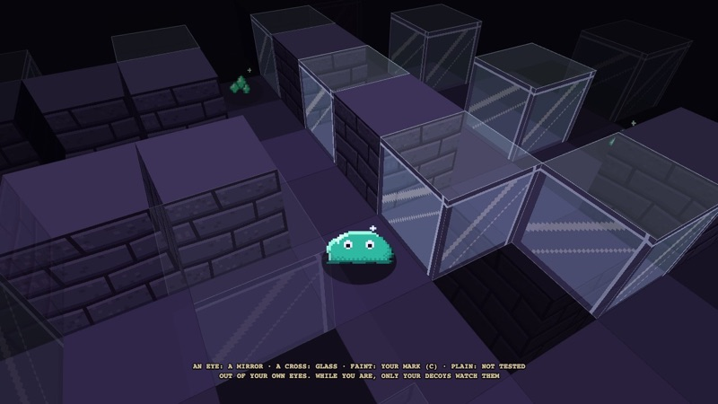
Glorps
Eleven little piles of glorps (3 to 6 each) lie round the hall. Walk over one and it goes straight into your purse, run or no run.
Getting out
With five fragments, every one of them wakes up hunting. Take them back to the broken mirror where you came in and walk into it: the ending plays out in the hall itself (Esc skips it, Enter or Space moves it on). Then you'll see your time (and your best), the glorps you picked up, how many times they got you, your closest call, how much glass you broke, how often you blacked out, how many you shooed off, and how many fragments you took.
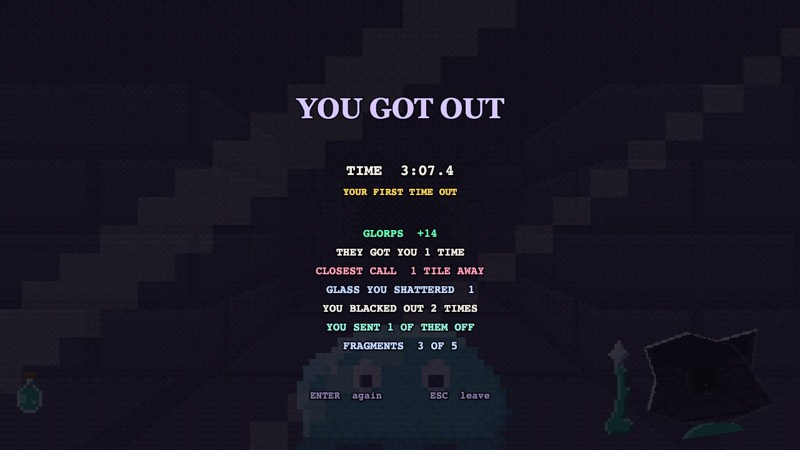
Tips
- Clear corners with your back. Raise the shard and back round a corner instead of turning to look. Whatever's there gets held, and you get no dread.
- Test before you chalk. One wrong chalk wakes half the hall, pulls the awake ones two steps closer and makes them all worse.
- Mark what you've tested. C with the shard still up marks the pane behind you.
- Save your arm. It's your tester and your only way to shoo one. Don't walk about with the shard up.
- Wipe while it's quiet. A fogged shard only holds what's close behind you. Wipe it when nothing is near, not when you need it.
- Glance, don't stare. Looking straight at one holds it, but every second builds dread and riles it faster. Hold it in a reflection or with a decoy instead.
- Shoo them early. A calm one is slow and easy to hold in the shard. Send it off before it turns, and it wakes calm again later.
- Leave sleepers alone. Don't walk within two tiles of one, and don't dash or chalk near one.
- Plant a sentry by a sleeper you have to pass, so you'll know when it's up.
- Think before the fifth fragment. It wakes everything, all hunting. Know your way back to the mirror first. Whichever five fragments you find first make the way out, so the two bonus ones come after, with every one of them hunting.
- Pace yourself after a prank. Two pranks in, a full dread kills you. Three in, even a jump can.
The numbers
| What | Value |
|---|---|
| Panes | 38, each 45% likely a mirror (always at least 10) |
| Fragments | 7 in mirrors, 5 needed, +25 glorps each extra; 5+ steps from your start, 4+ apart |
| Them: a step, unwatched | calm 0.9s, playful 0.6s, hunting 0.43s |
| Them: each fragment taken | 0.03s quicker (never under 0.45s before mood) |
| Them: can see you / lost you | ×0.8 / ×1.25 step time |
| Them: first moves | none in your first 5s |
| Moods: calm to playful / playful to hunting | 75s / 75s awake (1.5× faster stared at) |
| Them: their ways | the show-off chases, the trickster ambushes (3 tiles past where you face), the collector cuts you off (by your nearest fragment), the baby wanders; straight at you within 3 steps; each wears only its own looks |
| After a prank | the others within 3 steps startled back to 4 to 7 steps off |
| Them: next to you | first a reach (you hear it), the next unseen step a prank |
| Them: a new look | every 2 to 3 steps, at once when the mood turns |
| Moods: a hunter that lost you | playful again after 20s unseen |
| Moods: each of the first four fragments | +¼ mood |
| Moods: a noise near / breaking glass | +½ mood / +1 mood (+1½ within 7 tiles) |
| Waking: too near / dash / chalk / glass | 2 / 6 / 4 / 7 tiles |
| Waking: coming to | 1.5s more before its first step |
| Breaking glass: the awake lunge | 2 steps |
| Sent off (a shoo or a prank) | asleep 8+ tiles away for 15 to 25s |
| Hearing them move | up to 10 tiles |
| Dread: a straight look (far / filling the view) | +0.12 / +0.72 a second |
| Dread: draining / a jump / blacked out | 0.35 a second after 0.5s / +0.25 / 1s, back at 0.55 |
| Stress: a prank / full dread | +0.3 for good / +0.4 while it lasts (1 = dead) |
| After a prank | none of them moving for 2s (longer for a long prank) |
| Arm: held up / rest from empty / back up at | 4s / 6s / 35% |
| Fog: clear for / a smudge every / wipe | 15 to 30s / 8 to 18s / 1.5s |
| Fog: a fully fogged shard's reach | 3 tiles |
| Shooing one | 2s in the raised shard, any mood |
| Dash | 1 vial, up to 3 tiles; a vial back every 9s; up to 3 |
| Decoy | 7s, a line of 8 tiles; 2 in the hall |
| Sentry | reach 3.5 tiles through 1 wall; 2 pings 3s apart, 1s each; 2 in the hall |
| Glorps | 11 piles of 3 to 6 |
| Its true face | 1 in 250 a step, 3+ steps away; 500 glorps |
The step times are before two things: ×0.8 when it can see you or ×1.25 when it has lost you, and a small spread, set by where each one stands, that keeps them out of step with each other (up to 15% either way).